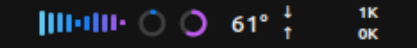
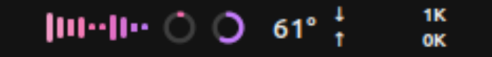
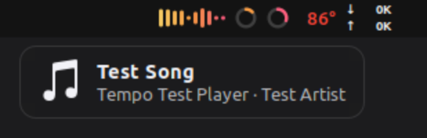
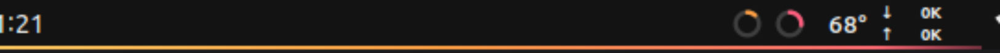
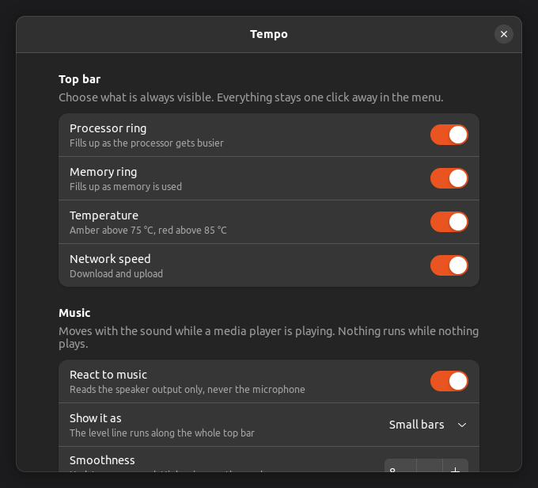
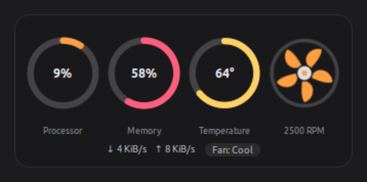

Why another system monitor?
There are many ways to put processor and memory numbers in a top bar. Tempo's reason to exist is how little it asks of your computer, and of your attention.
It costs nothing to watch
The rings, the temperature and the internet speed add no measurable processor load. One timer every 3 seconds reads three small files, and nothing is redrawn unless a value changed.
It is calm to look at
Two rings instead of rows of numbers, and a network speed that never changes width. The numbers are one click away, not always in your eye.
It is measured, not promised
Every figure on this page comes from a benchmark in the source code that anyone can run. When Tempo can't be seen, because the screens are off or a fullscreen window is in front, it stops.
It leaves no trace
250 KB in one folder of your home directory. No compiled code, no background service, no administrator rights. One command removes it.
One small extension, six things people look for
Tempo is a GNOME Shell extension for Linux. Each part has its own switch, a part that is off costs nothing, and new parts start off. Pick the one you came for:
System monitor
Processor and memory as two small rings in the top bar. One click shows usage, load, swap and the four busiest apps.
A lightweight system monitor →CPU temperature
The processor's temperature in the top bar, amber above 75 °C and red above 85 °C. Graphics and disk temperature are in the menu.
CPU temperature in the top bar →Internet speed
Download over upload in two small lines of fixed width, so the top bar never shuffles sideways as the numbers change.
An internet speed meter →Music visualizer
Small bars or a level line in the top bar, or a floating visualizer with segmented bars, falling peak caps and a reflection.
A music visualizer for Linux →Desktop widgets
A floating system panel and a floating visualizer. Drag them anywhere on any screen, and drag a corner to zoom them.
Desktop widgets for GNOME →Fans
Every fan and its speed in the menu, and optional fan control for computers that start their fans too late.
Fan speed and fan control →
The floating system panel (as rings) and the visualizer panel (as bars). More pictures below.
And the small things
Now playing
Rest the pointer on the music bars to see what is playing and in which app. The menu shows it too, and a click takes you there.
One menu
Click for processor speed and load, memory and swap, graphics and disk temperature, every fan, network speed, and the four busiest apps.
Four palettes
Ember, Aurora, Orchid, or Mono, which simply uses the top bar's own text colour.
A switch for everything
Each part turns on or off on its own, and a part that is off costs nothing.
Light by design
Tempo was built for a laptop that runs hot, so the rule is simple: do nothing unless something on screen needs to change. Measured on a 2019 Ryzen 5 3500U laptop with GNOME Shell 42; figures are percent of one of its eight processor threads.
State, in a clean test (make bench) | Added cost |
|---|---|
| Rings, temperature and network shown | Nothing measurable |
| Level line at 8 updates a second (the default rate) | 1.4 % |
| Level line at 12 updates a second | 2.1 % |
| Small bars at 8 updates a second | 2.1 % |
| Small bars at 12 updates a second | 2.6 % |
| Small bars at 20 updates a second | 4.2 % |
| Floating system panel | 0.2 % |
| Its little fan, while the real fan turns | 0.7 % more |
| Floating visualizer panel at 8 updates a second | 2.7 % |
The test plays its music the way a browser does, so the sound arrives in about 200 small pieces a second, as on a real desktop. Measured the same way, version 1.1 needed 10.7 % for the small bars at 8 updates a second. A real desktop also has real screens to repaint, so expect somewhat more there; tools/measure.sh in the source measures yours.
- Nothing is polled for music. Tempo waits for the session bus to say that a player started. The recorder stops a few seconds after it pauses, so the sound card can go back to sleep.
- One look at the sound per frame. Sound servers deliver sound in 100 to 200 small pieces a second. Tempo lets them wait in a pipe and reads them all at once, so the desktop wakes 8 times a second for music, not 200.
- Drawn once, then only stretched. The small bars, the level line and the visualizer's bars are each drawn a single time. After that the graphics card stretches or uncovers them.
- Redraw only on change. A ring is repainted only when its percentage changes; a label only when its text changes.
- Asleep when you can't see it. While the screens are off Tempo reads nothing, listens to nothing and animates nothing. While a fullscreen window covers the music visuals, the recorder is stopped.
- Slow sensors never block your desktop. Hardware sensors are read on a worker thread, and the process list in small slices between frames.
- Menu details are read only while the menu is open, and players are asked what they are playing only while the pointer rests on the bars.
- The one real cost is animation. Every update of a moving picture is a repaint of the screen by GNOME Shell. That is why the update rate is a setting with a modest default, why music is off until you switch it on, and why the little fan turns in five steps a second and no more. One thing Tempo cannot know: a floating panel behind a window still animates, so switch the visualizer panel off when you don't want it.
Screenshots
These are screenshots, not drawings. The project's test tool takes them from a GNOME Shell running the current code, with generated music playing. The song and the app names in them are test data.





Ember, Aurora, Orchid and Mono, three times life size.

Rest the pointer on the bars to see what is playing, and in which app.

The level line grows out from the middle as the music gets louder.


System panel, as rings.

System panel, as bars.

Visualizer, as bars.

Visualizer, mirrored.

Visualizer, as a wave.
Works on
Any distribution that uses the GNOME desktop, on any processor architecture. Tempo is a GNOME Shell extension, so it does not run on KDE Plasma, Xfce, Cinnamon or COSMIC.
| GNOME Shell | You have it on | Status |
|---|---|---|
| 42 | Ubuntu 22.04 LTS, Pop!_OS 22.04 | Tested on a real desktop and on every change |
| 43 | Debian 12 | Tested on every change |
| 44 | Fedora 38 | Same build as 42 and 43 |
| 45 | Fedora 39, Ubuntu 23.10 | Same build as 46 |
| 46 | Ubuntu 24.04 LTS | Tested on every change |
| 47 | RHEL 10, AlmaLinux 10, Rocky Linux 10, Fedora 41 | Same build as 46 and 48 |
| 48 | Debian 13, Fedora 42, Ubuntu 25.04 | Tested on every change |
| 49 | Fedora 43, Ubuntu 25.10 | Tested on every change |
| 50 | Ubuntu 26.04 LTS, Fedora 44 | Tested on every change |
On every change to the code, GitHub loads Tempo in each tested GNOME Shell and exercises every feature: all settings, the menu, all palettes, the music visuals with real captured sound, the floating panels (dragged and zoomed with the pointer, as you would), switching the extension off and on twice, and the settings window.
Install
Both buttons download the newest version. Run gnome-shell --version if you're not sure which GNOME you have.
Then install it, log out and back in, and switch it on:
gnome-extensions install --force ~/Downloads/tempo-gnome45-plus.shell-extension.zip
# log out and back in, then:
gnome-extensions enable tempo@saikatnjm.github.ioThe install guide has the steps for each distribution, updating, removing, and fixes for common problems. Every earlier version stays available there too.
Or from source, without root access:
git clone https://github.com/saikatnjm/tempo.git
cd tempo
make installMusic visuals need parec (package pulseaudio-utils), which Ubuntu, Fedora, Debian and most GNOME desktops already have. It works with PulseAudio and PipeWire.
Your sound stays yours
- Speakers only. Tempo reads the sound going to your speakers. It never opens the microphone.
- Nothing is kept. The sound becomes a handful of bar heights in memory and is thrown away. Nothing is saved, and Tempo never uses the network.
- Only while music plays. The recorder runs only while a media player reports that it is playing.
- Open source. Every line is on GitHub under the GPL-3.0-or-later licence.
Questions
What is Tempo?
A GNOME Shell extension for Linux that works as a super light system monitor in the top bar: processor and memory rings, temperature, internet speed and fans. It can also show your music as a visualizer, and put floating panels on your desktop.
Does it slow my computer down or drain the battery?
The system readings add no measurable processor load. The music visuals are the one part that costs something: 1.4 to 2.7 % of one processor core at the default rate while music plays, plus about 1 % for the sound recorder, and nothing while it doesn't. While the screens are off, nothing runs at all.
Which Linux distributions does it work on?
Any distribution with the GNOME desktop, versions 42 to 50: Ubuntu 22.04 to 26.04, Fedora, Debian 12 and 13, Arch, openSUSE, Pop!_OS 22.04, Zorin OS and others. It does not run on KDE Plasma, Xfce or Cinnamon.
How is it different from other system monitor extensions?
It shows less in the top bar on purpose (two rings instead of rows of numbers), it publishes what it costs and how that was measured, and it stops entirely when you can't see it. If you want many numbers in view at once, another extension may suit you better.
Is it free?
Yes. Tempo is free and open source under the GPL-3.0-or-later licence, with no accounts, no ads and no network access.
Which app is making that sound?
Rest the pointer on the small bars, or open the menu: the song and the app are at the top. Click it there to go to the app.
The bars don't show up
Check that "React to music" is on, that something is playing sound, and that the player supports the standard media controls. If it appears in GNOME's media controls in the notification list, it does.
The temperature isn't shown
Your machine has no sensor Tempo recognises yet. AMD, Intel and most ARM boards work; please open an issue for anything else.
Can it show numbers next to the rings?
The numbers are one click away in the menu. Keeping the top bar calm is the point.
Why is there a small Tempo icon in my top bar?
Every part is switched off, or the floating panels have taken their place. The icon keeps the menu reachable.
How do I get the floating panels?
Click Tempo, open Floating panels and switch on the system panel, the visualizer panel, or both. Their designs, background and placement are in the settings.
A floating panel can't be dragged
A panel on the desktop sits behind everything else, so a click only reaches it where nothing is in front. If your desktop shows icons, or you use the older X11 session, the click never arrives: set Place them to On top of windows in the settings, move and size the panel, then switch back.
The little fan doesn't turn
It turns only while the real fan does; many laptops keep the fan off until they are warm. If the panel shows no fan at all, your computer doesn't report a fan speed to Linux.
Does Tempo keep working while the screen is off?
No, on purpose. While the screens are off it reads nothing, listens to nothing and animates nothing. On the lock screen GNOME switches extensions off altogether.